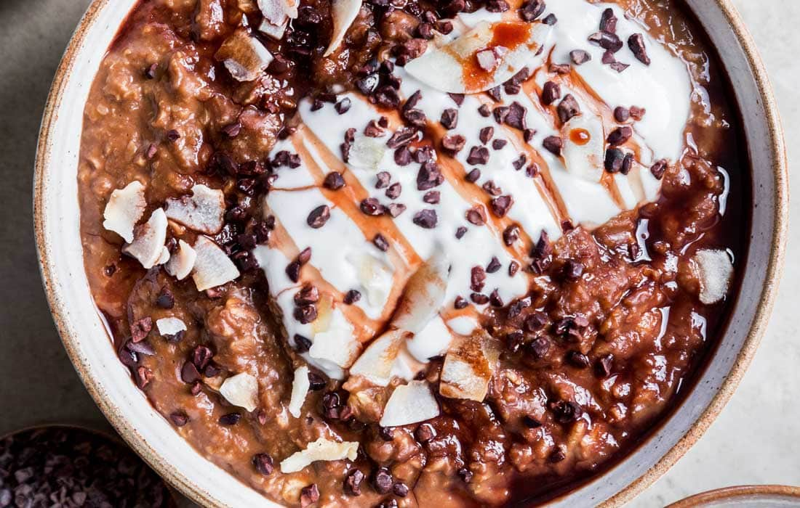

Chocolate Porridge

Description
On a chilly day, this chocolate porridge is heaven. It’s thick, rich and creamy.
Ingredients
- 1/2 cup (1oz) gluten-free porridge oats
- 1 heaped teaspoon cacao powder
- 1 teaspoon almond butter
- 1 teaspoon coconut sugar or maple syrup (optional)
- 3fl oz coconut milk alternative
Preparation
- Pour the porridge oats and cacao powder into a pan, then add the almond butter and coconut sugar or maple syrup, if using. Add the coconut milk and stir to mix everything together.
- Cook the porridge over a medium heat for 3–4 min, stirring, until it thickens and goes a dark, chocolatey colour – you can add more milk if you need to.
- Pour the porridge into your bowl and sprinkle with any healthy toppings you want to use.